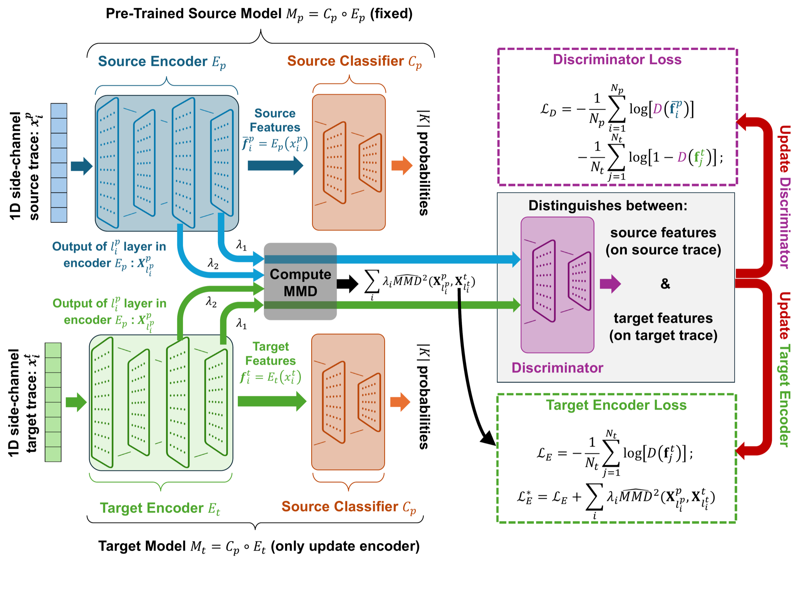
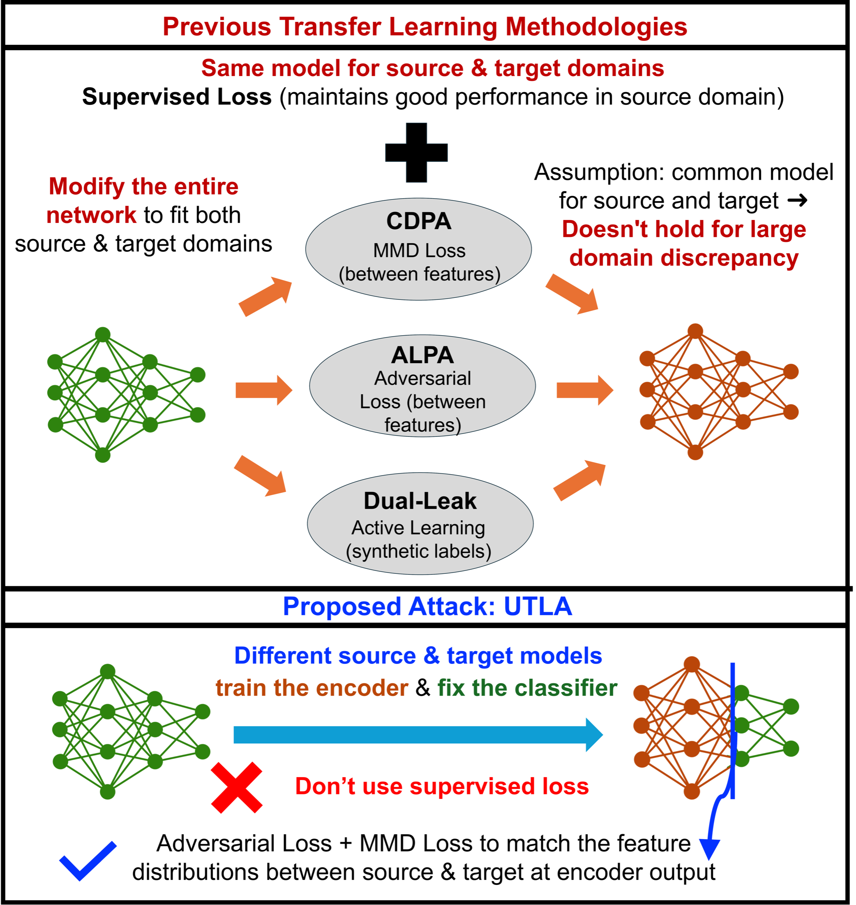

Hardware shifts
Spartan-6 FPGA, XMEGA and STM32 microcontrollers, AVR, ARM Cortex-A72, and x86.
AsiaCCS 2026 · Security in Hardware
Unsupervised side-channel transfer learning across devices and modalities.
UTLA turns labeled traces from an accessible source into a passive attack on an unseen target—using only unlabeled target traces, even when hardware, leakage, or implementation changes.
Power · EM · cache
Unknown key · passive observations
FPGA power → MCU power
MCU power → x86 cache
masked + shuffled → masked AES
power, EM, and cache timing
Prior unsupervised attacks look for one domain-invariant representation. That works when source and target are similar. As discrepancy grows, the common encoder becomes the bottleneck.
UTLA keeps the task shared and lets each domain speak through its own encoder.
Spartan-6 FPGA, XMEGA and STM32 microcontrollers, AVR, ARM Cortex-A72, and x86.
Fine-grained power and EM measurements transfer into coarse-grained cache timing.
UTLA crosses AES implementations protected by different masking and shuffling strategies.
THE APPROACH
UTLA freezes the source classifier, trains a target-specific encoder adversarially, and adds explicit multi-layer MMD regularization to stabilize alignment under large domain gaps.

Train source encoder Ep and classifier Cp on labeled traces from a controlled device.
Learn target encoder Et from unlabeled target traces with adversarial training and MMD.
Pair Et with the frozen Cp, rank key hypotheses, and recover the target key.
Adversarial alignment + explicit multi-layer distribution matching
THE EVIDENCE
NGE is the number of target traces required to reach guessing entropy 1. Lower is better; “N.C.” means the method did not recover the key within 25,000 traces.
SAKURA-AES to XMEGA power
Power traces to Flush+Flush timing
STM32 power to AVR EM
UTLA does not make every transfer possible. Cache timing → SAKURA-AES did not converge, matching its severe geometric mismatch (αT = 14.20).
WHY IT WORKS
Separate encoders lower the shared-task error when one common representation cannot explain both domains. MMD supplies the explicit signal that keeps adversarial adaptation stable.


Public side-channel datasets can become attack assets against unseen devices implementing the same cryptographic algorithm.
Security implication
EVALUATION SURFACE
REPRODUCE THE WORK
The repository groups scripts by source dataset. Each folder documents its expected data layout, profiling command, transfer entry point, and output directories.
Open repository ↗$ pip install -r requirements.txt
$ python Source_Profiling.py 1 1
$ python UTLA_from_Sakura_to_XMEGA-Power.py 1 1 2
Run experiment scripts from inside their dataset directory so relative paths resolve correctly.
Place public traces in the documented Data path.
Train the encoder and classifier on labeled source traces.
Train the target encoder using unlabeled target traces.
Measure the trace count needed to reach GE = 1.
CITE THE PAPER
Saion K. Roy, Ziyue Zhang, Aidong Adam Ding, and Yunsi Fei. ACM Asia Conference on Computer and Communications Security, 2026.